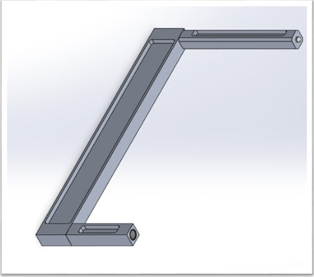
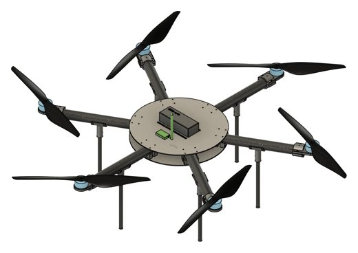
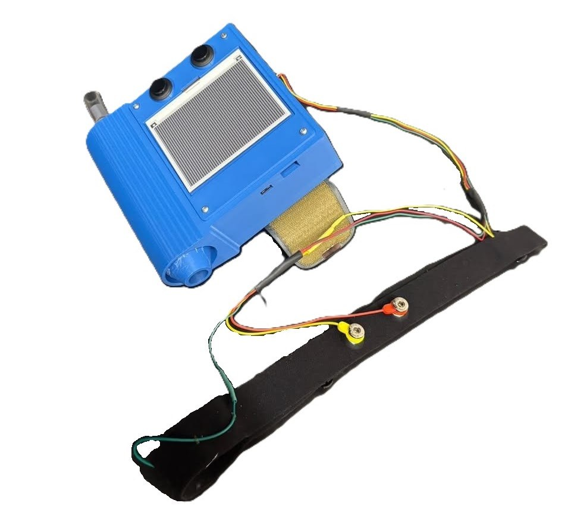
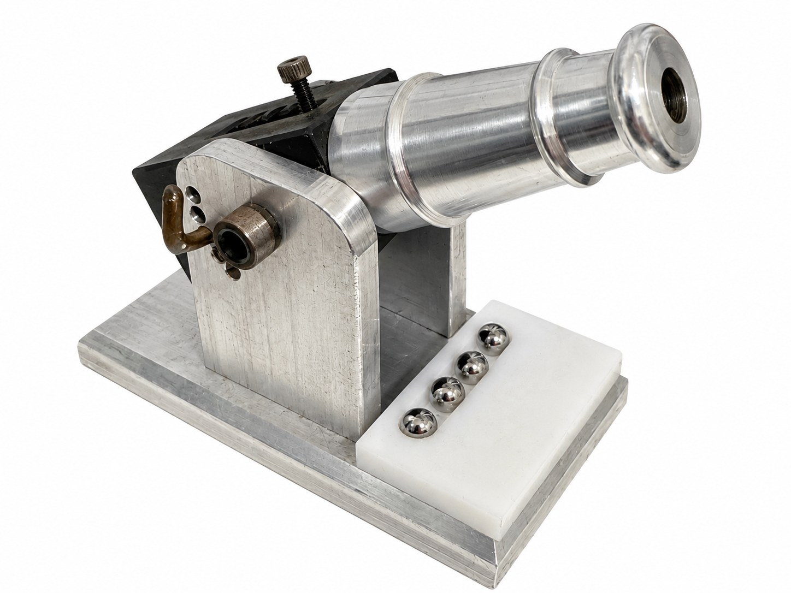
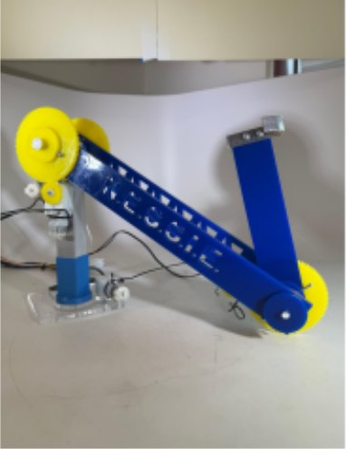
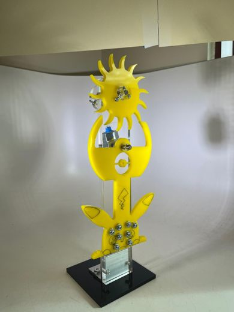

Projects
Internship

Inspection Fixture
- Where
- General Atomics - Electromagnetics
- When
- 2026
- Skills
- DFM, GD&T, engineering drawings
- Outcome
- Custom inspection fixture with a ±0.001″ tolerance to guarantee product quality and expedite the inspection workflow.
A fixture that positions parts accurately for inspection, designed for manufacturability and repeatable use.
Vertical Flight Society, Team Mirage

Wildfire Response Hexacopter
- Where
- Vertical Flight Society, UC San Diego
- When
- 2025-2026
- Skills
- Ansys FEA, composite layup, CNC machining
- Outcome
- Our team successfully built a functional hexacopter capable of eVTOL flight and payload delivery.
An electric VTOL aircraft for wildfire response. I was an airframe lead and led structural testing and manufacturing design.
Triton Baja SAE

Baja SAE Pedal Box
- Where
- Triton Baja, UC San Diego
- When
- 2024
- Skills
- SolidWorks, FEA, MATLAB, TIG welding, laser cutting
- Outcome
- Pedal box came out 12% lighter, then welded and tested.
An off-road racing pedal box that came out 12% lighter, then welded and tested.
Projects and coursework

Point-of-Care Parasympathetic Monitor
- Where
- Senior Design Capstone, UC San Diego
- When
- 2026
- Skills
- C++, Arduino, AD8232, Pan-Tompkins peak detection, ECG signal processing
- Outcome
- Sampled ECG signals at 250 Hz and extracted cardiac parameters at around 95% accuracy (heart rate within 3.3% of a reference monitor), contributing to our team winning Best Overall Project at the UCSD Senior Capstone Poster Presentation.
A portable device that measures heart rate variability during deep breathing and a blood pressure cuff hold.
Machining Seminar, UC San Diego

Machined Kinematic Cannon
- Where
- UC San Diego machining seminar
- When
- 2025
- Skills
- Manual and CNC milling and turning, GD&T, DFM, tolerance stacking
- Outcome
- Every component machined to ±0.003″
A kinematic ball bearing launcher machined and assembled for a machining seminar at UC San Diego.
MAE 3, UC San Diego

MAE3 N.E.S.S.I.E.
- Where
- MAE 3, UC San Diego
- When
- 2025
- Skills
- Fusion 360 CAD, free body diagrams, torque and gear analysis, motor characterization
- Outcome
- Scored 2,400 of a possible 3,400 points. My lower-arm torque analysis predicted 35 g of added load; testing held about 140 g.
A remote-controlled, hook-armed robot that scored 2,400 points. I analyzed its lower arm.

MAE3 Pendulum Clock
- Where
- MAE 3, UC San Diego
- When
- 2025
- Skills
- Fusion 360 CAD, laser cutting, rigid body analysis
- Outcome
- Rigid body model predicted one escapement revolution at 9.72 s against 10.07 s measured (3.41% error), far closer than the point-mass model (20.42%).
A pendulum clock built for MAE 3, with a video and report.